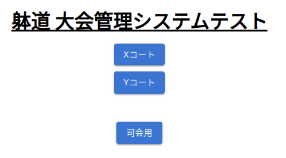
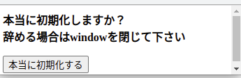
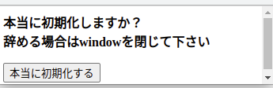
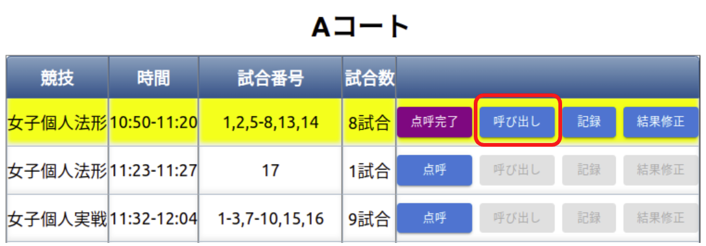
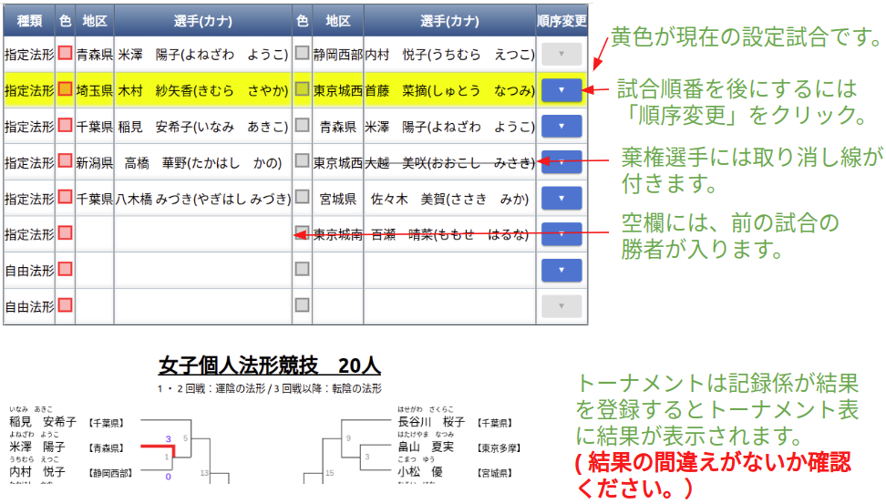
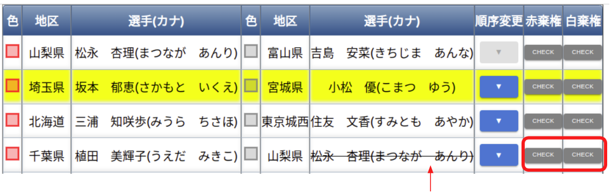
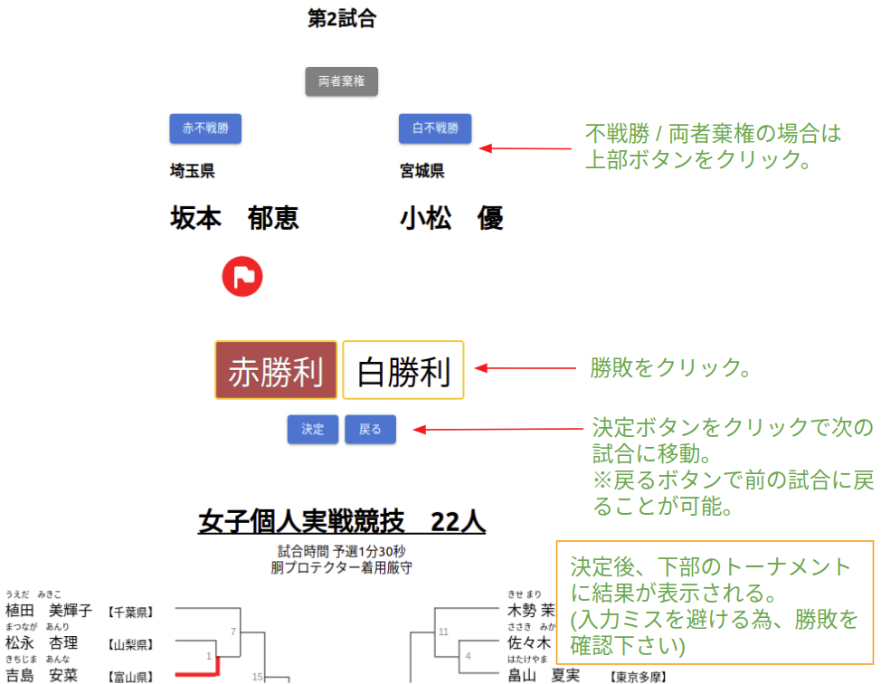
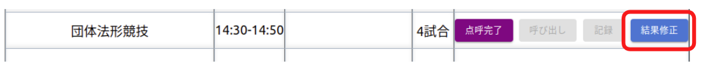
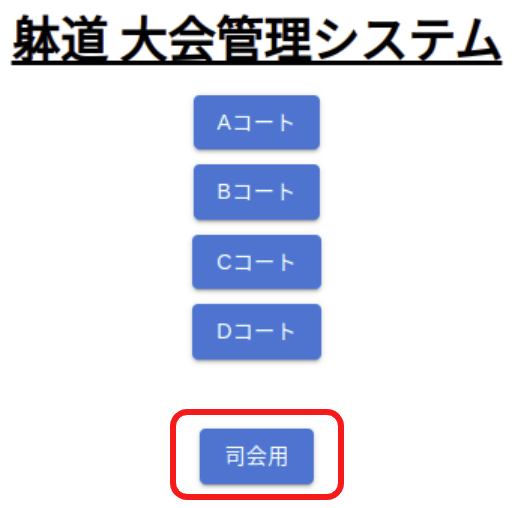

はじめに
躰道大会管理システムについてのドキュメントである。
ツール
ドキュメントはMarkdown形式で記述し、mdbook を用いてビルドしている。
リアルタイムにレンダリング結果を確認しながら、ドキュメントを書きたい時は、mdbookをインストールし以下のように実行する。
mdbook serve
開発環境構築
必要な環境
- Docker
- Git
手順
以下の手順は本レポジトリのルートで実行する想定で記載している。
dataを取得する。
git submodule update --init --recursive
コンテナを立ち上げる(最初、イメージがローカルに存在しない場合はDockerレジストリから取得される)。
docker compose up
(Optional) 自前でイメージをビルドし使ってもよい。
docker build -t ghcr.io/kazutomurase/taido-competition-record .
ポート被りが無ければ、http://localhost:3000 でアクセスできる。 ポート番号は .env の PORT で指定できる。
.env の COMPETITION_NAME を変更することで、コンテナを立ち上げた際にDBにinsertするデータを変更できる。 COMPETITION_NAME には data/ 直下のディレクトリ名を指定する。
開発用ツール
フォーマット修正
開発環境構築の手順に従いイメージを作成しておく必要がある。
本レポジトリのルートで以下を実行する。
tools/format.bash
データの抽出
作業中コンテナのデータを抽出したい場合は本レポジトリのルートで以下を実行する。 result以下にcsv形式で保存される。
tools/export.bash http://localhost:3000
データベース/キャッシュの初期化
作業中コンテナの状態を初期化したい場合は本レポジトリのルートで以下を実行する。
tools/reset.bash
静的解析
開発環境構築の手順に従いイメージを作成しておく必要がある。
本レポジトリのルートで以下を実行する。
tools/lint.bash
大会準備
各大会毎にデータベースを構築する必要がある。
以下実行しスクリプトを利用する為の環境を準備する。
python3 -m venv venv
source venv/bin/activate
pip install -r requirements.txt
トーナメント用DB作成
大会Excelファイルと出力先ディレクトリを入力すると自動で出力してくれる。
scripts/generate_tournament_db_from_xl.py --file-path (FILE_PATH_TO_EXCEL_FILE) --output-path (OUTPUT_DIRECTORY)
時程表を作成するためのGUIを用意している。 大会名(e.g. 2024_alljp)とブロック(e.g. A)を入力し、新規作成や編集を行うことができる。
scripts/edit_block_csv.py
GCP環境へのデプロイ方法
必要な前準備
- Google Cloud CLIのインストール
- GCPアカウントへのブラウザ上でのログイン・本人確認
- ※Googleアカウントの本人確認を複数回実施しなくて済むよう、まずブラウザでコンソールにログインし、CLIでの認証にはコンソールで発行した鍵を用いる形とする
1. Google Cloudプロジェクトの作成
- ブラウザからGCPコンソールにログインし、新しいプロジェクトを作成
- ここで設定したプロジェクトIDを以後
$PROJECT_IDとする
- ここで設定したプロジェクトIDを以後
- 作成後、gcloud CLIからプロジェクトを指定する
gcloud config set project PROJECT_ID
2. サービスアカウントの作成と認証情報の取得
(1) ブラウザでサービスアカウントを作成
- GCPコンソールから、
IAMと管理>サービスアカウント>サービスアカウントを作成- 作成したアカウント名を以後
$SERVICE_ACCOUNT_NAMEとする
- 作成したアカウント名を以後
- ロール：以下のみ付与
- Cloud Build 編集者:
roles/cloudbuild.builds.editor - Cloud SQL クライアント:
roles/cloudsql.client - Artifact Registry 書き込み:
roles/artifactregistry.writer - Secret Manager シークレット参照:
roles/secretmanager.secretAccessor - Cloud Run 管理者:
roles/run.admin - Service Usage 管理者:
roles/serviceusage.serviceUsageAdmin - サービスアカウントユーザー:
roles/iam.serviceAccountUser
- Cloud Build 編集者:
(2) サービスアカウントのJSON鍵を作成・ダウンロード
-
作成したアカウントの
キータブ →キーを追加→新しい鍵を作成→JSON -
ダウンロードされたjsonファイルのファイル名をkey.jsonに変えて、リポジトリルートに移しておく
mv /path-to-your-download-dir/your-file-name.json ./key.json
(3) gcloud CLIで認証
gcloud auth activate-service-account --key-file=key.json
- 必要なAPIを有効化しておく
gcloud services enable \
cloudresourcemanager.googleapis.com \
run.googleapis.com \
compute.googleapis.com \
sqladmin.googleapis.com \
artifactregistry.googleapis.com \
cloudbuild.googleapis.com \
servicenetworking.googleapis.com \
secretmanager.googleapis.com \
cloudshell.googleapis.com
3. Artifact RegistryにDockerリポジトリを作成
GCPコンソールからArtifact Registryを開き、Dockerリポジトリを作成する
- 名前: ar-docker-repo
- 任意に設定可能。ここで設定したリポジトリ名を以後
$ARTIFACT_REGISTRY_REPO_NAMEとする
- 任意に設定可能。ここで設定したリポジトリ名を以後
- 形式: Docker
- モード: 標準
- ロケーションタイプ: リージョン asia-northeast1
- 説明: 大会名が区別できるように適宜
- 不変のイメージタグ: 無効
4. Cloud SQL インスタンスの作成
GCPコンソールからCloud SQLを開き、インスタンスを作成する
- エディション: Enterprise（サンドボックス）
- バージョン: PostgreSQL 17
- インスタンスID: postgres-instance
- 任意に設定可能。ここで設定したインスタンスIDを以後
$CLOUDSQL_INSTANCE_IDとする
- 任意に設定可能。ここで設定したインスタンスIDを以後
- パスワード: postgres
- リージョン: asia-northeast1
- 可用性: シングルゾーン
5. cloudbuild.yamlファイルの作成
CIにおいて実行する内容を定義するyamlファイルを作成する。Cloud Buildの実行時にこのファイルを参照させる。 実行内容は基本的には毎回共通(cloudbuild-template.yamlに記述)だが、各種リソースのIDなどを埋め込む必要があるため、.envに記載した内容を元にyamlファイルを生成するスクリプトを用意している。
- ./ci/.envに必要な変数を記入して、以下を実行する。
cd ci && ./generate-cloudbuild.py
cloudbuild_$PROJECT_ID.yamlというファイルが生成される。- 作成したファイルをデプロイ用レポジトリ(※アクセス権限必要)に移す。
- 6と7を実施してからファイルをコミットしプッシュするとイメージ作成とデプロイが行われる。初回に手動で試したい場合は8と9を参照。
なお、CPUやメモリなど各種リソース設定値についてもcloudbuild-template.yamlに設定している。 設定値の妥当性についてはissue #213を参照。
デプロイ用レポジトリは別で用意してもよい(Githubで新規レポジトリを作成するなど)。その場合、レポジトリは以下のような構成にする。
- taido-competition-recordをsubmoduleとしてレポジトリのルートに設定。
- 作成したファイルをレポジトリのルートに置く。
6. GitHubとのCloud Build連携
GCPコンソールからCloud Build→プロジェクトを選択 →リポジトリを接続→GitHub
- GitHubアカウントをOAuthで接続（リポジトリの管理者レベルの権限が必要、適宜依頼する）
- 対象のリポジトリ(上記デプロイ用レポジトリ)を選択して登録
(参考) ビルドトリガーの作成と管理 | Cloud Build Documentation | Google Cloud
7. Cloud Buildトリガーの作成
GCPコンソールを開き、Cloud Buildから接続済みのリポジトリを選んでトリガーを作成する
- 名前: 任意
- リージョン: global
- 説明: 任意
- イベント: ブランチにpushする
- リポジトリサービス: Cloud Buildリポジトリ
- 構成: Cloud Build構成ファイル（yamlまたはjson）
- CloudBuild構成ファイルの場所:
/cloudbuild_$PROJECT_ID.yaml- 手順5で作成したファイルを参照する
- サービスアカウント: 手順2(1)で作成したアカウントを選択
8. 初回イメージの手動ビルドとpush (任意)
Cloud Buildのトリガーの動作前に、Cloud Runへのデプロイに必要なDockerイメージをArtifact Registryに一度手動でpushする。 ($IMAGE_NAME, $CLOUD_RUN_DEPLOY_NAMEは手順5で.envファイルに設定したイメージ名)
gcloud auth configure-docker asia-northeast1-docker.pkg.dev
docker build -t asia-northeast1-docker.pkg.dev/$PROJECT_ID/$ARTIFACT_REGISTRY_REPO_NAME/$IMAGE_NAME .
docker push asia-northeast1-docker.pkg.dev/$PROJECT_ID/$ARTIFACT_REGISTRY_REPO_NAME/$IMAGE_NAME
9. Cloud Run公開アクセスの許可 (任意)
手動で一度デプロイしておく。リソース設定はCI buildで追って反映させる。
# Cloud Run サービスの初回デプロイ
gcloud run deploy $CLOUD_RUN_DEPLOY_NAME \
--image=asia-northeast1-docker.pkg.dev/$PROJECT_ID/$ARTIFACT_REGISTRY_REPO_NAME/$IMAGE_NAME \
--region=asia-northeast1 \
--platform=managed \
--allow-unauthenticated
--update-env-vars PRODUCTION=1 \
成功すると以下のように表示され、サービスにアクセスするためのURLが確認できる。
Deploying container to Cloud Run service [$IMAGE_NAME] in project [$PROJECT_ID] region [asia-northeast1]
...
Service URL: https://$IMAGE_NAME-$ランダムなハッシュ値-uc.a.run.app
10. CloudSQLの初期テーブル作成
- ローカルにpsqlをインストール
例: Ubuntu22.04
sudo apt install postgresql-client-common postgresql-client-14
-
Cloud SQL Auth Proxy(Cloud SQLインスタンスへの接続のための公式バイナリ)をダウンロードする
chmod +x cloud-sql-proxy
# プロキシ起動
./cloud-sql-proxy --credentials-file=key.json $PROJECT_ID:$REGION:$INSTANCE_NAME &
export PGPASSWORD=postgres
cd ./data/$COMPETITION_NAME/static
psql -h 127.0.0.1 -p 5432 -U postgres -d postgres -f generate_tables.sql
cd ../original
psql -h 127.0.0.1 -p 5432 -U postgres -d postgres -f generate_tables.sql
cd ../../test/static
psql -h 127.0.0.1 -p 5432 -U postgres -d postgres -f generate_tables.sql
cd ../original
psql -h 127.0.0.1 -p 5432 -U postgres -d postgres -f generate_tables.sql
(参考) 公開（未認証）アクセスを許可する | Cloud Run Documentation | Google Cloud
データベースの変更を一括で行いたい場合に、一度全削除してから行う方法は以下。
psql -h 127.0.0.1 -p 5432 -U postgres -d postgres
DROP SCHEMA public CASCADE;
CREATE SCHEMA public;
接続が必要なくなったら、cloud-sql-proxyのプロセスは落としておくとよい。
ps aux | grep -v grep | grep cloud-sql-proxy | tr -s " " | cut -d" " -f2 | xargs kill $1
オプショナル. Memorystoreの利用（必要に応じて）
MemorystoreはredisをCloud側で立ててくれるサービス。Cloud Runのインスタンス数を2個以上にスケーリングする可能性がある場合は使う必要がある(参考)が、これまでの運用実績では必要な場面は無し。
- Cloud Runスケーリングが必要な場合に構成
- Cloud Runの「接続」→ Memorystoreを追加
ユーティリティ
以下大会準備や大会中に使える便利URLやAPIについて記載する。
データベース初期化
(URL)/admin/danger_zone にアクセスし"データベース初期化"ボタンを押下することで、 その名の通りデータベースを全て初期化できる。
キャッシュリセット
データベースを更新したものの、古いキャシュが参照されてしまってる場合は以下を実行、 またはブラウザでアクセスする。
curl "(URL)/api/reset_cache"
イベント順変更
イベント順を入れ替えたい時(例: Aコートの競技順10と11を入替)は以下を実行、 またはブラウザでアクセスする。
curl "(URL)/api/change_event_order?block=a&target_schedule_id=10"
現在スケジュール位置変更
現在のスケジュールの位置を変更したい時(例: Aコートの現在競技を5番のものにしたい)は以下を実行、 またはブラウザでアクセスする。
curl "(URL)/api/update_current_schedule?block=a&schedule_id=5"
褒章更新
褒章に関して、選手名、または選手IDを以下のように指定し、更新を行うことができる。
# 選手名で更新 (ただし他大会と人物が重複していることもあるので、対象の大会データディレクトリ以下で実行するとよい)
curl "http://localhost:3000/api/record_awards?id=1&player_id=$(git grep "選手名" | cut -d":" -f2 | cut -d"," -f1)"
# 選手IDで更新
curl "(URL)/api/record_awards?id=1&player_id=1"
データベース更新
一般にデータベースを更新する方法が用意されている。
例: block_aテーブルにおけるid=1のplayers_checked要素を1に更新
curl "(URL)/api/update_db?id=1&table_name=block_a&key=players_checked&value=1"
サイトの構成
大会結果閲覧用を除いて、BASIC認証がかかっている。 .envのUSERNAME, PASSWORDに設定される。
| アクセス先 | 説明 |
|---|---|
| / | 大会結果閲覧用 |
| /admin | 大会運営用 |
| /test | システムテスト用 |
賞状印刷
以下3つのテンプレートWordsファイルを用意し、これらを配置したディレクトリを(WORDS_DIR) とする。
競技名、名前、ランクという文字が最終結果によって置き換わる。
- 賞状_個人.docx
- 賞状_団体.docx
- 賞状_総合.docx
WindowsのPowerShellを立ち上げ、本レポジトリルートで以下を実行するとGUIが立ち上がる。 GUI上のボタンをクリックすることで印刷を行うことができる。
scripts/print_certificate.py --url (システムURL) --input-words-dir (WORDS_DIR)
--open-onlyを指定すると、保存したファイルを開くだけ、指定しないと印刷まで進む。
表示崩れなどないか、しっかり確認・編集してから印刷に進みたい場合は--open-onlyを指定するとよい。
--check-imageを指定すると、"_画像入り.docx"を代わりに利用する(レイアウト確認・修正用)
初回、プリンタのプロパティや印刷設定が「文書印刷」になっているか確認するとよい。 (なっていない場合、色の薄い文字が印刷される)
結果出力
以下のように実行することで、途中結果や最終結果CSVをdata/(大会名)/result以下にエクスポート出来る。
tools/export.bash (URL)
最終結果pdf
躰道公式サイトに載せている最終結果は、各競技結果ページにおいて 印刷出力(e.g. Ctrl+Pを押下 => "Save as pdf" を選択し保存)を行い、FTP経由でアップロードする。
大会終了後
最終結果CSVをエクスポートし終えたら、data/(大会名)/resultをコミットする。
cloudbuild_$PROJECT_ID.yamlを編集しコミットする(Docker内DB接続に切り替わる)。
- add-cloudsql-instances項目を削除
- PGSQL_HOST=localhostに変更
- USE_LOCAL_DB=1に変更
- SHOW_HIGHLIGHT_IN_TOURNAMENT=0に変更
- USE_RESULT_DATA=1に変更
- SHOW_AWARD_IN_PUBLIC=1に変更
- 総合得点のある競技会の場合は SHOW_TOTAL_IN_PUBLIC=1に変更
Cloud SQLを削除する(一日で700円台消費されるので早めに)。
- 編集 -> インスタンスの削除を防止する のチェックを外して保存
- 削除
準備
使用するスマートフォンまたはタブレットで以下サイトにアクセスする。 初回はユーザー名/パスワードを入力する必要がある。 アクセス後、ホーム画面に追加しておくとよい。
カメラでQRコードを読み取るのが楽である。
事前テスト
以下サイトにアクセスする。 初回はユーザー名/パスワードを入力する必要がある。
U~Zコートの6コートがある。 U/Vは個実・個法・団法・展開の4パターンを試せる。 W/Xは個実・個法・団法の3パターンを試せる。 Y/Zは個実・個法の2パターンを試せる。 他に使用している人がいそうか(時程が進行しているなど)見ながら、空いているコートを利用するとよい。
 

参考情報
以下は選手・観客向けに公開される。尋ねられたら案内するとよい。
選手点呼係
- 各競技の選手の点呼を行う。
サンプル動画
タブレット操作方法


選手呼び出し係
- 選手棄権が出ていないか競技開始前に確認する（以下の選手呼び出し画面で確認できます）。
- 各試合時の号令・選手呼び出しを行う。
サンプル動画
法形
実戦
タブレット操作方法


実戦トーナメント途中で負傷し、反則勝利の際、次の試合でドクターストップが掛けられた場合、 赤・白棄権のボタンで該当選手に取り消し線を付けることができます。

※赤・白棄権ボタンをもう一度押下すると取り消し線は消えます。
※二回戦以降の棄権になるため、トーナメントに取り消し線は引かれません。
記録係
- 各競技の結果を記録する。
サンプル動画
法形
実戦
修正 (法形/実戦, 競技中)
修正 (法形/実戦, 競技後)
団体法形
展開
タブレット操作方法

※競技終了後は、以下「結果修正」ボタンをクリックすると修正画面に移動できる。
※競技終了後は、以下「結果修正」ボタンをクリックすると修正画面に移動できる。

司会
- 点呼係からの依頼に応じてアナウンスを行う。
サンプル動画
タブレット操作方法
